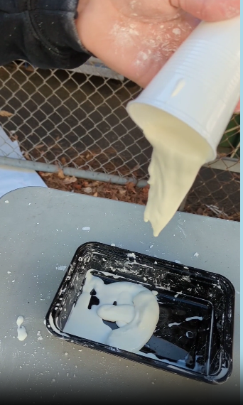

8/25/23, this is my first journal entry. In this class so far we learned how to set up our website/set up aws. Then also gone over some safety slides to keep us safe during this class.
8/11/23, this is my second journal entry. We've learned how to CAD (computed aided desgin). Playing around with tinkercad I've made a mug, then made a microwave..kinda it look a bit off. Then on tinkercad we desined our rube goldberg project.
9/18/23 Today we learned in class how to push our website and different codes we can run. On a google slide we learned about the engineering process as well as embedding in our websites.
We have made a CAD for our Rube Goldberg project as well as a CAD for a home applience. We started to make the pipes and ramps out of cardboard.
This is a picture of the draft for the Rube Golberg project:
9/25/23 We did a paper boat challenge where we made a boat only made of paper which had to float carrying metal. My boat stayed floating for a pretty long time. I forgot how long, but I remember my teams boat was one of the boats that stayed a float for a long time. I noticed boats tht had a minimal desgin worked the bestWe also disected a computer and was able to see all the parts. The parts I remember seeing are is the motherboard, power supply, fan, hard drive, ocptical drive, RAM, and the memory chip thing.
This is a picture of the computer disection
10/2/23 This week we tried to make a functional protestic hand. The materials we had to make this functional hand was cardboard, tape, and string. My group used all of those materials plus a pencil, but a proplem we arn into is that the hand wouldn't hold the bottle. So what we did was use the pencil as a thumb to secure holding the bottle.
This is the video of the hand.
10/16/23 The week prior we made a cad for out bottle rocket project. We put a cone for the top of the bottle/rocket for less drag. Then we put 4 like wings on the side of a rocket to idealy get diastance when it was tested. When we tested out our rocket the first time it went up and backwards which was pretty cool. Then the second time it still traveled up but it went forward and although it didn't travel far it traveled further than other groups.
10/26/23 Today in class we tried to make out own filteration system. The materials we were provided was bottles, cotton balls, big and small rocks. The way emily and I did it was first the cotton balls at the bottom then small rocks, sand, then the big rocks. I was thinking the big rocks can filter the chucks that the dirty water we needed to filter had. Then the water would go through the sand and the bits would stay above the sand, which it did. Then the small rocks would filter the small bits that might've gone through. Lasty the water went through the cotton balls. Our water was still not the cleanst and after running it through 3 times it got a little cleaner. But what we noticed that after a while the sand became muddy which made our water dirty again
11/3/23 We did circuitry on tinkercad. We did 2 Labs on there with the circuit board. First we had to have a power supply, then we had to attach our energy source to the rails of our breadboard. We added our resistor then an led and the goal was to light it up.
12/1/23 Buiness Idea
This week, we explored business engineering and made the "Cool Kit". It provided common everyday needs by offering a customizable essentials kit, with items like toothpaste, deodorant, and hair ties. Each kit comes in a unique pouch, available in various patterns and colors, tailored to individual preferences. Customers can opt for the original pouch at $15, including 10 items, or upgrade to the $25 version, containing 15 different and more desirable items.
1/10/24 Spaghetti Bridge Project
The weight of my groups bridge was 23.7
It held 1.91 grams of water
Answer to question 3
The heavist part is probably the longest sides of the bridge because it had the most thickest part of the bridge.
I got the inpiration of tiktok which is probably why is didnt work as well, but it was working for the girl but she had different material.
It worked better because the first bridge just fell apart before testing it. But if we were able to do it another time it would've been better.
The failure of the bridge was just that is didnt have strong support, it broke once pressure was applied.
Something we could've was making the space inbetween the long sides of the bridge smaller. Then also making the primeter thicker so it is stronger.
1/12/24 - This week, we experimented with Oobleck, a non-Newtonian fluid that exhibits characteristics of both liquids and solids. Comprising cornstarch and water, it transitions between liquid and solid states based on the applied pressure and movement speed. Gentle pressure and slow movements cause it to behave like a liquid, while more pressure and faster motions made it solidify.

1/29/23 This week we were working on the project proposal. We had the option to make a mousetrap or arduino cars and my group choose to make a mousetrap. We worked on the cad of the mousetrap, then after the measurements.
2/28/24 This is the video of the mouse trap, they wounded the string up in order for the mouse trap to travel. The mouse trap traveled all the way across the cafeteria from the starting point. I don'r remeber the actually number though. For the wheels we used the skewers and cd, the skewers kept the cds aligned/stay in place.
3/8/24 Egg drop, my groups first idea was to have straws or sticks to be sticking out like so others did. But when we actually got building that didn't seem like the safest option. So instead we used the parashoot method. First we made a little box for the egg to fit in and surrounded it with paper as a cushion for when it drops. We used a trash bag for the parashoot. I think the parashoot helped a lot with slowing down the speed of the fall. Compared to others that did not have a parashoot it was slower, and the sound of the landing was more soft.
3/14/24 Today in class we did a challenge, the challenge is called flying paper. We basically got one piece of regular printer paper and had to figure out the best way it would reach the trash can. My design was an airplane, what i was thinking was creating a plane that was more sleek on the desgin for it to hopefully reduce the wind resistance. And I wanted the plane to be on the heavier side because I knew if it was light the wind was just carry is randomly. But my plane actually did get pretty close to the trash can so I'm proud.
And heres a picture of mine
4/3/24 We tested the boat in the rain gutter and tested how far it would get in the rain gutter. In 4 blows the boat traveled 130cm. I think my groups boat worked slighty better than others I saw. Some peoples boat weren't able to travel or even float. If there was something we could've add/change to the design is to add a sail so when we blew air towards it, it would pick it up more.
Design-- We have looked at many designs of boats and found that having a boat with higher sides, would prevent water from coming from the top. The boat design we chose was a horizontally short one. We want it to be short to conserve the tape and make sure water would not leak into it. The two pointed edges are the most common shape of a boat. We also used a flat bottom to ensure good balance in the water. Some of the rounded bottoms of boats can cause a challenge for balance. Overall, our design is to have a flat bottomed boat with tall sides.
CAD of Boat
Building--When we were building the boat we tried using the tape in necessary areas. We first cut the base of the boat and used a good piece of cardboard for it to be sturdy. We tried to make each piece of cardboard we cut as straight as possible, so there wouldn’t be unevenness.And if it were to be uneven, there would be a greater chance of water leaking in because of the cardboard not lining up properly. After we taped the base and all the sides together, we re-taped to make it secure.
5/31/24 On Wednesday day we went to the pool to test our boats. Before we put it in the pool we retapped the cracks and bottoms of our boat. Something I noticed when they were in the water the bottom of the boat wasn't sturdy. The boat was sinking in due to the weight and the sides were just caving in. Another problem that occured was that the walls were too tall, because of that they weren't able to stir the boat properly. But the boat was able to floating and the bottom didn't fall apart. Something we could've looked into is how to keep the boat in better balence.